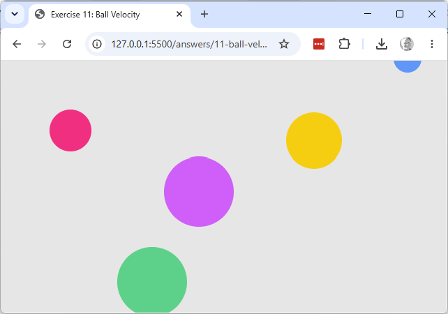

Working copy: exercises/11-ball-velocity/.
vx/vy to (0, 0) in setup() and run the sketch — confirm that ball alone
stays still while the others move.
draw() into two separate loops — one calling .move() on every
ball, then a second calling .display() on every ball. Confirm the animation looks identical,
and explain why the order between separate balls' move/display doesn't matter here (contrast
with sketch 01/03, where order of statements mattered).